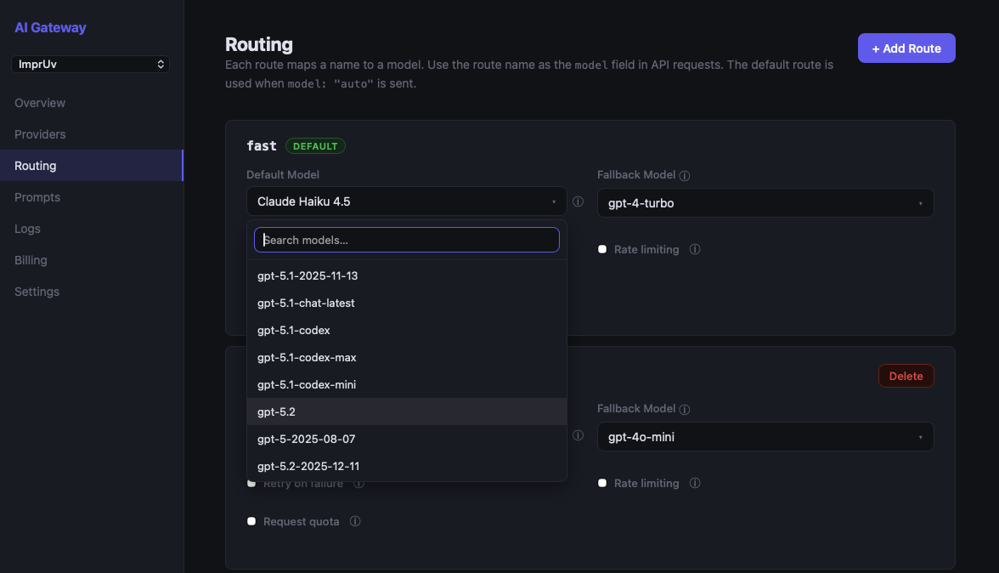
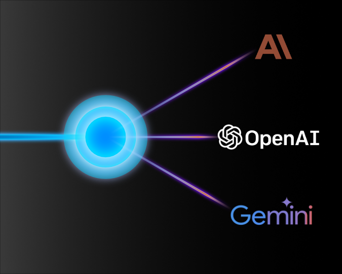

OpenAI vs Anthropic vs Google for Mobile Apps — And How to Use All Three
Picking an AI provider for your mobile app used to be simple: OpenAI was the obvious choice, and the question was which GPT model to use.
That's no longer the case. Anthropic's Claude models are genuinely competitive — often better — across a range of tasks. And Google's Gemini models have entered the picture with strong multimodal capabilities and aggressive pricing. The cost, latency, and capability profiles are different enough across all three that the choice now requires real consideration.
This post compares OpenAI, Anthropic, and Google across the dimensions that matter for mobile developers: capability, latency, pricing, and reliability. Then we'll look at a pattern that sidesteps the either-or decision entirely.
The Models Worth Considering in 2026
OpenAI
- GPT-4o - Flagship multimodal model. Strong reasoning, function calling, vision. Lower latency than earlier GPT-4 variants.
- GPT-4o mini - Faster, significantly cheaper, suitable for lower-complexity tasks. Good first-token latency for streaming.
- o3-mini - Reasoning-optimized model for tasks requiring step-by-step logic.
Anthropic
- Claude 3.5 Sonnet - Flagship model. Excellent at reasoning, long-context tasks, and code. 200k token context window.
- Claude 3.5 Haiku - Fastest Claude model. Competitive with GPT-4o mini on latency and price.
- Claude 3 Opus - Maximum capability; significantly more expensive. Rarely necessary for mobile use cases.
- Gemini 1.5 Pro - Long-context flagship (1M token window). Strong multimodal and reasoning capabilities.
- Gemini 1.5 Flash - Fast, cost-efficient. Excellent price-performance for high-volume mobile apps.
- Gemini 2.0 Flash - Latest generation. Fast with improved reasoning over 1.5 Flash.
Capability Comparison for Common Mobile Use Cases
Conversational AI / Chatbots
Both GPT-4o and Claude 3.5 Sonnet produce high-quality conversational responses. Anecdotally, many developers report Claude feeling more thoughtful in longer exchanges. Less likely to just tell users what they want to hear. GPT-4o tends to be punchier for short-form responses.
Verdict: Roughly equivalent. Try both with your actual prompts.
Text Summarization
Claude's long-context window (200k tokens as of Claude 3) makes it particularly strong for summarizing long documents. If your app lets users summarize articles, PDFs, or lengthy notes, Claude 3.5 Sonnet has a structural advantage.
Verdict: Claude 3.5 Sonnet edge, especially for long inputs.
Code Assistance / Developer Tools
Both models are strong. Claude 3.5 Sonnet has performed exceptionally well on coding benchmarks and is widely praised by developers building AI coding tools. GPT-4o is also excellent and has a longer track record of production use in coding contexts.
Verdict: Claude 3.5 Sonnet slight edge on benchmarks; GPT-4o strong in practice.
Function Calling / Structured Output
GPT-4o has mature, reliable function calling support with JSON mode. Claude supports tool use but GPT-4o has a larger ecosystem of integrations and more developer familiarity. If your app relies heavily on structured outputs, GPT-4o is the safer bet.
Verdict: OpenAI GPT-4o edge.
Content Generation (Marketing Copy, Captions, etc.)
Claude tends to produce more natural-sounding text with less of the "AI voice" pattern that users find grating. For consumer-facing content generation, Claude's output often requires less editing.
Verdict: Claude edge for consumer content quality.
Latency on Mobile
Latency matters more on mobile than backend. Users are interacting directly with the AI; slow first-token time is immediately noticeable.
General observations (varies by region, load, and request complexity):
| Model | First Token (typical) | Notes |
|---|---|---|
| GPT-4o | 500–900ms | Good; streaming makes perceived latency lower |
| GPT-4o mini | 300–600ms | Fast; best for latency-sensitive use cases |
| Claude 3.5 Sonnet | 600–1,000ms | Slightly higher than GPT-4o on average |
| Claude 3.5 Haiku | 300–600ms | Comparable to GPT-4o mini |
| Gemini 1.5 Pro | 600–1,100ms | Slower first token; excels on long-context tasks |
| Gemini 1.5 Flash | 300–600ms | Fastest in class for cost-sensitive workloads |
For streaming UX: All three providers support server-sent events, so first-token latency is what the user actually feels. Total response time matters less. GPT-4o mini, Claude 3.5 Haiku, and Gemini 1.5 Flash are the best choices for latency-sensitive mobile interactions.
Pricing Comparison
Prices as of April 2026 (per 1M tokens):
| Model | Input | Output |
|---|---|---|
| GPT-4o | $2.50 | $10.00 |
| GPT-4o mini | $0.15 | $0.60 |
| Claude 3.5 Sonnet | $3.00 | $15.00 |
| Claude 3.5 Haiku | $0.80 | $4.00 |
| Claude 3 Opus | $15.00 | $75.00 |
| Gemini 1.5 Pro | $1.25 | $5.00 |
| Gemini 1.5 Flash | $0.075 | $0.30 |
For mobile apps with many users and short-to-medium prompts (< 2,000 tokens per exchange), GPT-4o mini, Claude 3.5 Haiku, or Gemini 1.5 Flash are the economical choices — Gemini 1.5 Flash in particular is the cheapest option across all three providers. The flagship models are justified for complex tasks but will cost 10–40x more per request.
Reliability and Uptime
OpenAI, Anthropic, and Google have all experienced outages. None has a perfect track record. For production mobile apps, relying on a single provider creates a single point of failure.
When OpenAI had its widely-reported outages in late 2024, any app using OpenAI exclusively was down. Developers who had a fallback to Anthropic or Google were unaffected.
How to Use All Three Without Rewriting Your App
The obvious challenge: integrating multiple providers means multiple SDKs, multiple authentication flows, and switching logic you have to write and maintain. That's code that has nothing to do with your app's actual features.
MAIG handles this at the gateway level. You add your OpenAI, Anthropic, and Google keys to your MAIG project. Then in your app, you call the MAIG SDK with a model name — MAIG routes the request to the right provider automatically.
In Swift:
let client = AIGatewayClient(apiKey: "maig_live_...")
// Use OpenAI
let response = try await client.generateText(
userMessage,
options: GenerateOptions(model: "gpt-4o")
)
// Use Anthropic
let response = try await client.generateText(
userMessage,
options: GenerateOptions(model: "claude-3-5-sonnet")
)
// Use Google
let response = try await client.generateText(
userMessage,
options: GenerateOptions(model: "gemini-1.5-flash")
)
In Kotlin:
val client = AIGatewayClient(apiKey = "maig_live_...")
// Use OpenAI
val response = client.generateText(
userMessage,
options = GenerateOptions(model = "gpt-4o")
)
// Use Anthropic
val response = client.generateText(
userMessage,
options = GenerateOptions(model = "claude-3-5-sonnet")
)
// Use Google
val response = client.generateText(
userMessage,
options = GenerateOptions(model = "gemini-1.5-flash")
)
Same SDK, same API surface. Swap providers by changing one string.
Switch Providers Without an App Store Update
The more powerful pattern: named routes. Configure a route in the MAIG dashboard that maps a name to a model:
Route: "chat"
Model: gpt-4o
Your app passes the route name as the model:
In Swift:
let response = try await client.generateText(
userMessage,
options: GenerateOptions(model: "chat")
)
In Kotlin:
val response = client.generateText(
userMessage,
options = GenerateOptions(model = "chat")
)
Now when you want to test Claude or Gemini in production, update the route target in the MAIG dashboard. No code change. No new release. No App Store review. Your users get the new model immediately.
This is also how you A/B test providers: run two routes ("chat-group-a", "chat-group-b"), split traffic in your app, compare quality and user metrics — all without shipping a new build.

Recommendation by Use Case
| Use Case | Recommended Model | Notes |
|---|---|---|
| Fast conversational chat | GPT-4o mini, Claude 3.5 Haiku, or Gemini 1.5 Flash | All fast; test UX preference |
| Long document summarization | Claude 3.5 Sonnet or Gemini 1.5 Pro | Claude 200k context; Gemini 1M context |
| Code generation / assistance | Claude 3.5 Sonnet or GPT-4o | Both excellent; Claude slight edge |
| Structured output / function calling | GPT-4o | Most mature ecosystem |
| Consumer content generation | Claude 3.5 Sonnet | More natural output |
| Cost-sensitive / high volume | Gemini 1.5 Flash | Cheapest across all three providers |
| Maximum capability | Claude 3.5 Sonnet or GPT-4o | Benchmark your specific tasks |
The Bottom Line
There's no universally "better" provider. The right choice depends on your specific use case, prompts, and latency requirements. The most resilient production apps don't pick one — they use whichever provider best fits the task, with the ability to swap from the dashboard without shipping a new build.
Test with your actual prompts. The difference between providers matters far less than prompt quality and UX.
Try All Three With MAIG
MAIG's free tier lets you add keys for OpenAI, Anthropic, and Google and test them side by side from a single SDK integration. No backend work, no per-provider SDKs.
